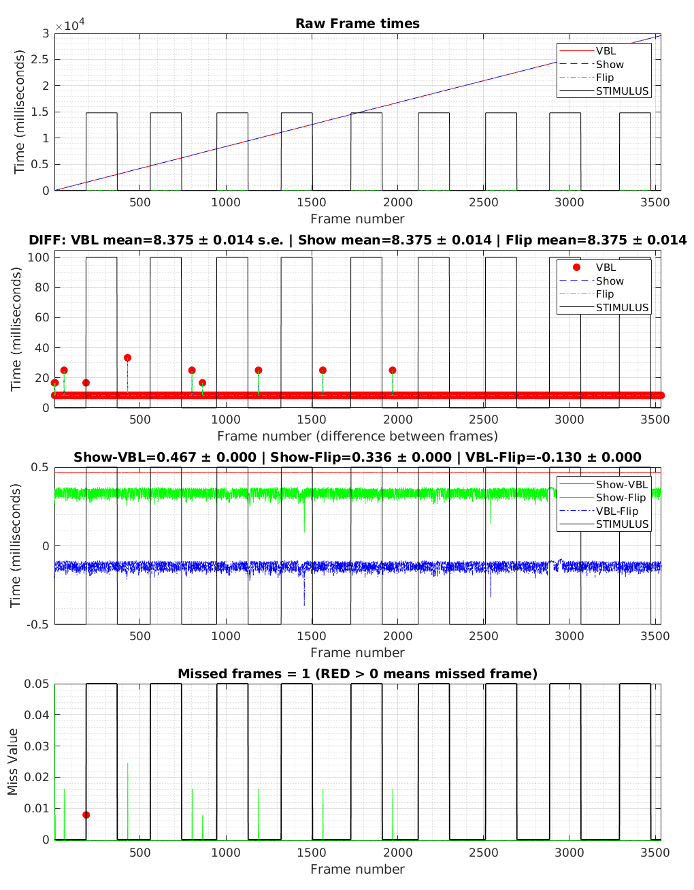
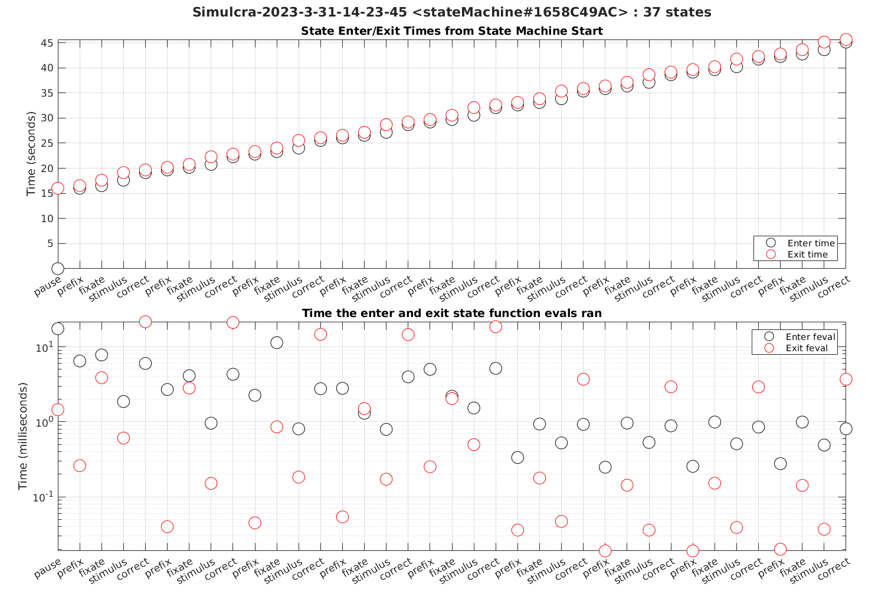

Demo of a state-machine-driven Opticka Behavioural Experiment.
Opticka is an object-oriented framework for the Psychophysics toolbox (PTB), allowing randomised interleaved presentation of parameter varying stimuli specified in experimenter-relevant values. It operates under Linux (PTB's preferred OS), macOS & Windows, and can interface via strobed words (using Display++, VPixx or a cheap and very reliable LabJack), or TTLs via low-cost Arduino. It uses ethernet to connect with Tobii or Eyelink eyetrackers and with with external harware for recording neurophysiological data.
In this demo, two stimulus objects (wrapped in a myStims manager object), task sequence variables (myTask object), and a screenManager (myScreen object) are passed to the runExperiment class. runExperiment uses the stateMachine class object which loads the experiment specification (for this demo it uses DefaultStateInfo.m)
DefaultStateInfo.m specifies the following experiment with six states (prefix, fixate, stimulus, correct, incorrect, breakfix), and uses the eyetracker (here using the mouse functions to transition from fixate.
┌───────────────────────────────────────┐
│ ▼
│ ┌───────────────────────────┐
┌──┼───────────────────────────────────▶ │ (1) prefix │ ◀┐
│ │ └───────────────────────────┘ │
│ │ │ │
│ │ ▼ │
│┌───────────┐ Transition ┌───────────────────────────┐ │
││ incorrect │ inFixFcn=>incorrect │ fixate │ │
││ │◀───────────────────────── │ show(stims, 2) │ │
│└───────────┘ └───────────────────────────┘ │
│ │ │
│ │ Transition │
└──┐ │ inFixFcn=>stimulus │
│ ▼ │
┌───────────┐ Transition ┌───────────────────────────┐ │
│ CORRECT │ maintainFixFcn=>correct │ stimulus │ │
│ │◀───────────────────────── │ show(stims, [1 2]) │ │
└───────────┘ └───────────────────────────┘ │
│ │
│ Transition │
│ maintainFixFcn=>breakfix │
▼ │
┌───────────────────────────┐ │
│ BREAKFIX │ ─┘
└───────────────────────────┘For this demo a dummy eyetracker object (where the mouse input transparently replaces the eye movements), is used to demonstrate behavioural control of the paradigm.
Opticka also offers an optional GUI (type `opticka` in the command window), which is a visual manager of the objects introduced here. The UI also controls other functions such as screen calibration, protocol loading/saving and managing communication with neurophysiological equipment via LabJack, Arduino and ethernet.
The source of this file can be found at : https://github.com/iandol/opticka/blob/master/optickaBehaviourTest.m
Contents
- Initial clear up of any previous objects
- Setup our visual stimuli
- Task Initialisation
- Setup screenManager Object
- Setup runExperiment Object
- Run the full behavioural task
- Plot a timing log of every frame against the stimulus on/off times
- Plot a timing log of all states and their function evaluation transition times
Initial clear up of any previous objects
Make sure we start in a clean environment, not essential
clear myStims myTask myExp myScreen sca %PTB screen clear all
Setup our visual stimuli
First we use the metaStimulus class to create a stimulus manager object that collects and handles groups of stimuli as if they were a single 'thing', so for example when you use the draw method myStims.draw(), it tells each of its child stimuli to draw in order. You can show and hide each stimulus in the group and only thoses set to draw will do so. Note you can control each stimulus yourself (each stimulus has its own set of control functions), but using metaStimulus makes the code simpler...
myStims = metaStimulus();
first stimulus is a smoothed 5° red disc
myStims{1} = discStimulus('colour', [0.7 0 0], 'size', 5, 'sigma', 25);
second stimulus is an optimised 0.8° fixation cross from Thaler et al., 2013
myStims{2} = fixationCrossStimulus('size', 0.8);
Task Initialisation
The taskSequence class defines a stimulus sequence (task) which is composed of randomised stimulus parameter changes (called variables) repeated over a set of blocks. A trial is an individual stimulus presentation. This
For behavioural tasks, several of the parameters like myTask.trialTime are not used as the state machine takes over the job of task timing, but the stimulus randomisation is still useful for such tasks. In this case the state info file can use taskSequence to deterimine the next stimulus value. There are functions to handle what happens if the subject responds incorrectly, where we can re-randomise the next value within the block.
myTask = taskSequence(); %new taskSequence object instance
Our variable is xPosition, applied to stimulus 1 only. 3 different position values so 3 trials per block...
myTask.nVar(1).name = 'xPosition';
myTask.nVar(1).stimulus = 1;
myTask.nVar(1).values = [-10 0 10];
We call the method to randomise the trials into a block (3 blocks, 3 trials) structure.
myTask.nBlocks = 3; randomiseTask(myTask);
---> taskSequence <taskSequence#1CBBD2AC8>: Took 14.664 ms | randomiseTask
Lets print out a table of the stimulus values for every trial to be run
showLog(myTask);
Setup screenManager Object
screenManager controls the PTB Screen(). We initialise the object with parameters to open the PTB screen with. Note distance and pixels per cm define the resultant geometry > pixel mappings. You can set several screen parameters, windowing, blending etc.
myScreen = screenManager('distance', 57.3,... % display distance from observer 'pixelsPerCm', 27,... % calibration value for pixel density, measure using calibrateSize() 'windowed', [0 0 800 600],... % use fullscreen [] or window [X Y]? 'backgroundColour', [0.5 0.5 0.5],... % initial background colour 'blend', true,... % enable OpenGL blending, you can also set blend modes when needed 'bitDepth', '8bit'); % FloatingPoint32bit, 8bit, FloatingPoint16bit etc. % use retina mode for macOS if ismac; myScreen.useRetina = true; end
Setup runExperiment Object
We now pass our stimulus, screen and task objects to the runExperiment class. runExperiment contains the runTask() method that actually runs the behavioural task.
Importantly, the stateInfoFile 'FixationTrainingStateInfo.m' determines the behavioural protocol that the state machine will run. The state machine is available as myExp.stateMachine. Read through that StateInfo file to better understand what is being done. stateInfoFiles contain some general configuration, then a set of cell-arrays of functions, and a table of states which run these function arrays as the states are entered and exited. For this simple task, it starts in a paused state, then transitions to a blank period, then the stimulus presentation, where initiating and maintaining fixation on the cross leads to a correct state or breaking fixation leads to breakFix state, then the state machine loops back to blank etc. using the myTask object to set variable values on each trial.
myExp = runExperiment('stimuli', myStims,... %stimulus objects 'screen', myScreen,... %screen manager object 'task', myTask,... % task randomised stimulus sequence 'stateInfoFile', 'DefaultStateInfo.m', ... % use the default state info file 'debug', true,... % enable debug mode for testing 'useEyeLink', true, ... % use the eyelink manager 'dummyMode', true, ... % use dummy mode so the mouse replaces eye movements for testing 'subjectName', 'Simulcra', ... 'researcherName', 'Joanna Doe');
Run the full behavioural task
runTask(myExp);
--->arduinoManager: Ports available: /dev/ttyS0
---> : Parsing input argument | name
PTB-INFO: Using modified PortAudio V19.7.0-devel, revision 147dd722548358763a8b649b3e4b41dfffbcfbb6
---> audio-manager <audioManager#1CBC3003F>: Audio Manager initialisation complete | constructor
PTB-INFO: Choosing deviceIndex 0 [HDA Intel PCH: ALC3234 Analog (hw:0,0)] as default output audio device.
PTB-INFO: New audio device -1 with handle 0 opened as PortAudio stream:
PTB-INFO: For 2 channels Playback: Audio subsystem is ALSA, Audio device name is HDA Intel PCH: ALC3234 Analog (hw:0,0)
PTB-INFO: Real samplerate 44100.000000 Hz. Input latency 0.000000 msecs, Output latency 9.977324 msecs.
Snd(): Using PsychPortAudio via shared handle 0, until you call Snd('Close'); to unshare.
===>>>>>> Start task: Simulcra-2022-11-3-18-30 <<<<<<===
---> : Parsing input argument | name
---> taskSequence <taskSequence#1CBBD2AC8>: Took 8.546 ms | randomiseTask
---> taskSequence.initialise: Initialised!
---> screenManager: Skipping Sync Tests etc. - ONLY FOR DEVELOPMENT!
BitsPlusPlus: Could not find a Bits# config file under [/home/cog5/.Psychtoolbox/BitsSharpConfig.txt]. Assuming a Bits+ device instead of a Bits# is connected.
BitsPlusPlus: Please create a config file under this name if you have a Bits# and want to use it as Bits# instead of as a Bits+.
BitsPlusPlus: The most simple way is to create an empty file. A more robust way is to store the name of the Bits# serial port
BitsPlusPlus: in the first line of the text file, e.g., COM5 [Windows], or /dev/ttyACM0 [Linux] or similar.
---> screenManager: Probing for a Display++... NO Display++
---> screenManager: Internal processing set to: 8 bits
PTB-INFO: This is Psychtoolbox-3 for GNU/Linux X11, under Matlab 64-Bit (Version 3.0.18 - Build date: Jun 27 2022).
PTB-INFO: OS support status: Linux 6.0.3-060003-generic Supported.
PTB-INFO: Type 'PsychtoolboxVersion' for more detailed version information.
PTB-INFO: Most parts of the Psychtoolbox distribution are licensed to you under terms of the MIT License, with
PTB-INFO: some restrictions. See file 'License.txt' in the Psychtoolbox root folder for the exact licensing conditions.
PTB-INFO: For information about paid support, support memberships and other commercial services, please type
PTB-INFO: 'PsychPaidSupportAndServices'.
PTB-INFO: Connected to Advanced Micro Devices, Inc. [AMD/ATI] Baffin [Radeon Pro WX 4100] GPU with DCE-11.0 display engine [6 heads].
PTB-INFO: Proper timing and timestamping of visual stimulus onset is not reliably supported at all on this desktop GUI
PTB-INFO: when running in windowed mode (non-fullscreen), or for transparent windows. If PTB aborts with
PTB-INFO: 'Synchronization failure' you can disable the sync test via a call to Screen('Preference', 'SkipSyncTests', 2).
PTB-INFO: You won't get proper stimulus onset timestamps in any case though, so windowed mode is of limited use.
PTB-INFO: Using a desktop GUI like GNOME-3 or Ubuntu desktop, which uses the Mutter compositor, may give better timing if
PTB-INFO: you opt-in into our new experimental(!) support: Call setenv('PSYCH_EXPERIMENTAL_NETWMTS', '1') at start of your script.
PTB-INFO: OpenGL-Renderer is AMD :: AMD Radeon Pro WX 4100 (polaris11, LLVM 14.0.6, DRM 3.48, 6.0.3-060003-generic) :: 4.6 (Compatibility Profile) Mesa 22.3.0-devel (git-2a63387 2022-11-02 jammy-oibaf-ppa)
PTB-INFO: VBL startline = 2160 , VBL Endline = 2220
PTB-INFO: Measured monitor refresh interval from beamposition = 16.667653 ms [59.996449 Hz].
PTB-INFO: Measured monitor refresh interval from VBLsync = 16.667662 ms [59.996418 Hz]. (50 valid samples taken, stddev=0.000631 ms.)
PTB-INFO: Reported monitor refresh interval from operating system = 16.667778 ms [59.995998 Hz].
PTB-INFO: Small deviations between reported values are normal and no reason to worry.
PTB-INFO: Psychtoolbox imaging pipeline starting up for window with requested imagingmode 1025 ...
PTB-INFO: Will use 8 bits per color component framebuffer for stimulus drawing.
PTB-INFO: Will use 8 bits per color component framebuffer for stimulus post-processing (if any).
---> screenManager: Previous OpenGL blending: GL_ONE | GL_ZERO
---> screenManager: OpenGL blending now: GL_SRC_ALPHA | GL_ONE_MINUS_SRC_ALPHA
Compiling all shaders matching SmoothedDiscShader * into a GLSL program.
Building a fragment shader:Reading shader from file /home/cog5/Code/Psychtoolbox-3/Psychtoolbox/PsychOpenGL/PsychGLSLShaders/SmoothedDiscShader.frag.txt ...
Building a vertex shader:Reading shader from file /home/cog5/Code/Psychtoolbox-3/Psychtoolbox/PsychOpenGL/PsychGLSLShaders/SmoothedDiscShader.vert.txt ...
---> : Parsing input argument | name
===>>> No strobe output I/O...
===> No reward TTLs will be sent...
===>>> User Functions instantiated…
======>>> Loading State File: /home/cog5/Code/opticka/DefaultStateInfo.m
=================>> Built state info file <<==================
Columns 1 through 4
{'name' } {'next' } {'time' } {'entryFcn'}
{'pause' } {'prefix' } {[ Inf]} {11x1 cell }
{'prefix' } {'fixate' } {[0.5000]} { 4x1 cell }
{'fixate' } {'incorrect'} {[ 10]} {11x1 cell }
{'stimulus' } {'incorrect'} {[ 10]} { 2x1 cell }
{'incorrect'} {'timeout' } {[0.5000]} { 8x1 cell }
{'breakfix' } {'timeout' } {[0.5000]} {11x1 cell }
{'correct' } {'prefix' } {[0.5000]} {10x1 cell }
{'timeout' } {'prefix' } {[ 5]} { 0x0 cell }
{'calibrate'} {'pause' } {[0.5000]} { 5x1 cell }
{'drift' } {'pause' } {[0.5000]} { 5x1 cell }
{'override' } {'pause' } {[0.5000]} { 1x1 cell }
{'flash' } {'pause' } {[0.5000]} { 1x1 cell }
{'showgrid' } {'pause' } {[ 10]} { 0x0 cell }
Columns 5 through 7
{'withinFcn'} {'transitionFcn'} {'exitFcn'}
{0x0 cell } {0x0 cell } { 1x1 cell}
{0x0 cell } {0x0 cell } { 0x0 cell}
{3x1 cell } {1x1 cell } { 4x1 cell}
{3x1 cell } {1x1 cell } { 1x1 cell}
{1x1 cell } {0x0 cell } {10x1 cell}
{1x1 cell } {0x0 cell } {10x1 cell}
{1x1 cell } {0x0 cell } {11x1 cell}
{1x1 cell } {0x0 cell } { 0x0 cell}
{0x0 cell } {0x0 cell } { 0x0 cell}
{0x0 cell } {0x0 cell } { 0x0 cell}
{0x0 cell } {0x0 cell } { 0x0 cell}
{0x0 cell } {0x0 cell } { 0x0 cell}
{1x1 cell } {0x0 cell } { 0x0 cell}
=================>> Loaded state info file <<=================
===>>> Dummy eyelink being initialised...
Eyelink: Opening Eyelink in DUMMY mode
---> eyelink manager <eyelinkManager#1CBC3F6F9>: Running on a Dummy Eyelink @ 0 (time offset: 0) | Initialise Method
===>>> Warming up the GPU, Eyetracker and I/O systems... <<<===
===>>> Save initial state: /tmp//Simulcra-2022-11-3-18-30.mat
===> Saving behaviouralRecord object...
PAUSED, press [p] to resume...
===>>> Hello from userFunctions.testFunction() for:Simulcra-2022-11-3-18-30 <runExperiment#1CBC2B4D4>
===>INITFIX:fixate:1CBDCCE4D | B:1 R:1 [1/9] | V: 2 | Time: 3.600 (28) isFix:0 isExcl:0 isFixInit:0 fixLength:
0.00 > xPosition: 0.000 | updateVariables: B:1 R:1 T:1 V:2>S1:xPositionOut=0
===>CORRECT:correct:1CBE08BD0 | B:1 R:1 [1/9] | V: 2 | Time: 5.717 (154) isFix:1 isExcl:0 isFixInit:0
fixLength: 1.51 > xPosition: 0.000 | updateVariables: B:1 R:1 T:1 V:2>S1:xPositionOut=0
===>>> Hello from userFunctions.testFunction() for:Simulcra-2022-11-3-18-30 <runExperiment#1CBC2B4D4>
===>INITFIX:fixate:1CBE6C0E4 | B:1 R:2 [2/9] | V: 3 | Time: 9.234 (215) isFix:0 isExcl:0 isFixInit:0
fixLength: 0.00 > xPosition: 10.000 | updateVariables: B:1 R:2 T:2 V:3>S1:xPositionOut=10
===>CORRECT:correct:1CBEB0551 | B:1 R:2 [2/9] | V: 3 | Time: 11.651 (360) isFix:1 isExcl:0 isFixInit:0
fixLength: 1.51 > xPosition: 10.000 | updateVariables: B:1 R:2 T:2 V:3>S1:xPositionOut=10
===>>> Hello from userFunctions.testFunction() for:Simulcra-2022-11-3-18-30 <runExperiment#1CBC2B4D4>
===>INITFIX:fixate:1CBEE3ABC | B:1 R:3 [3/9] | V: 1 | Time: 13.467 (422) isFix:0 isExcl:0 isFixInit:0
fixLength: 0.00 > xPosition: -10.000 | updateVariables: B:1 R:3 T:3 V:1>S1:xPositionOut=-10
===>CORRECT:correct:1CBF28E0C | B:1 R:3 [3/9] | V: 1 | Time: 15.918 (568) isFix:1 isExcl:0 isFixInit:0
fixLength: 1.51 > xPosition: -10.000 | updateVariables: B:1 R:3 T:3 V:1>S1:xPositionOut=-10
===>>> Hello from userFunctions.testFunction() for:Simulcra-2022-11-3-18-30 <runExperiment#1CBC2B4D4>
===>INITFIX:fixate:1CBF5961C | B:2 R:1 [4/9] | V: 3 | Time: 17.634 (630) isFix:0 isExcl:0 isFixInit:0
fixLength: 0.00 > xPosition: 10.000 | updateVariables: B:2 R:1 T:4 V:3>S1:xPositionOut=10
===>CORRECT:correct:1CBF9D356 | B:2 R:1 [4/9] | V: 3 | Time: 20.035 (774) isFix:1 isExcl:0 isFixInit:0
fixLength: 1.51 > xPosition: 10.000 | updateVariables: B:2 R:1 T:4 V:3>S1:xPositionOut=10
===>>> Hello from userFunctions.testFunction() for:Simulcra-2022-11-3-18-30 <runExperiment#1CBC2B4D4>
===>INITFIX:fixate:1CBFCCC78 | B:2 R:2 [5/9] | V: 1 | Time: 21.718 (836) isFix:0 isExcl:0 isFixInit:0
fixLength: 0.00 > xPosition: -10.000 | updateVariables: B:2 R:2 T:5 V:1>S1:xPositionOut=-10
===>CORRECT:correct:1CC012068 | B:2 R:2 [5/9] | V: 1 | Time: 24.168 (983) isFix:1 isExcl:0 isFixInit:0
fixLength: 1.51 > xPosition: -10.000 | updateVariables: B:2 R:2 T:5 V:1>S1:xPositionOut=-10
===>>> Hello from userFunctions.testFunction() for:Simulcra-2022-11-3-18-30 <runExperiment#1CBC2B4D4>
===>INITFIX:fixate:1CC044671 | B:2 R:3 [6/9] | V: 2 | Time: 25.952 (1045) isFix:0 isExcl:0 isFixInit:0
fixLength: 0.00 > xPosition: 0.000 | updateVariables: B:2 R:3 T:6 V:2>S1:xPositionOut=0
===>CORRECT:correct:1CC083841 | B:2 R:3 [6/9] | V: 2 | Time: 28.185 (1179) isFix:1 isExcl:0 isFixInit:0
fixLength: 1.52 > xPosition: 0.000 | updateVariables: B:2 R:3 T:6 V:2>S1:xPositionOut=0
===>>> Hello from userFunctions.testFunction() for:Simulcra-2022-11-3-18-30 <runExperiment#1CBC2B4D4>
===>INITFIX:fixate:1CC0B0426 | B:3 R:1 [7/9] | V: 2 | Time: 29.768 (1241) isFix:0 isExcl:0 isFixInit:0
fixLength: 0.00 > xPosition: 0.000 | updateVariables: B:3 R:1 T:7 V:2>S1:xPositionOut=0
===>CORRECT:correct:1CC0EE6E6 | B:3 R:1 [7/9] | V: 2 | Time: 31.969 (1373) isFix:1 isExcl:0 isFixInit:0
fixLength: 1.52 > xPosition: 0.000 | updateVariables: B:3 R:1 T:7 V:2>S1:xPositionOut=0
===>>> Hello from userFunctions.testFunction() for:Simulcra-2022-11-3-18-30 <runExperiment#1CBC2B4D4>
===>INITFIX:fixate:1CC11C1C2 | B:3 R:2 [8/9] | V: 3 | Time: 33.585 (1435) isFix:0 isExcl:0 isFixInit:0
fixLength: 0.00 > xPosition: 10.000 | updateVariables: B:3 R:2 T:8 V:3>S1:xPositionOut=10
ans =
0
PAUSED, press [p] to resume...
===>>> Hello from userFunctions.testFunction() for:Simulcra-2022-11-3-18-30 <runExperiment#1CBC2B4D4>
===>INITFIX:fixate:1CC17599A | B:3 R:2 [8/9] | V: 3 | Time: 36.752 (1529) isFix:0 isExcl:0 isFixInit:0
fixLength: 0.00 > xPosition: 10.000 | updateVariables: B:3 R:2 T:8 V:3>S1:xPositionOut=10
---> screenManager 1CBC28428: Closing screen = 0, Win = 10, Kind = 1
INFO: PTB's Screen('Flip', 10) command seems to have missed the requested stimulus presentation deadline
INFO: a total of 10 times out of a total of 1609 flips during this session.
INFO: This number is fairly accurate (and indicative of real timing problems in your own code or your system)
INFO: if you provided requested stimulus onset times with the 'when' argument of Screen('Flip', window [, when]);
INFO: If you called Screen('Flip', window); without the 'when' argument, this count is more of a ''mild'' indicator
INFO: of timing behaviour than a hard reliable measurement. Large numbers may indicate problems and should at least
INFO: deserve your closer attention. Cfe. 'help SyncTrouble', the FAQ section at www.psychtoolbox.org and the
INFO: examples in the PDF presentation in PsychDocumentation/Psychtoolbox3-Slides.pdf for more info and timing tips.
======>>> Total ticks: 1537 | stateMachine ticks: 1775
======>>> Tracker Time: 0 | PTB time: 36.9008 | Drift Offset: 0
 Plot a timing log of every frame against the stimulus on/off times
PTB has the most reliable and precise timing control of any experimental control system, and we therefore log every flip time alongside the stimulus transitions. The timing log shows every recorded frame in relation to the stimulus transitions.
showTimingLog(myExp);
Plot a timing log of all states and their function evaluation transition times
The state machine also records the timestamps when states are entered and exited. In addition, it times how long each cell array of functions take to run on enter/within/exit, to check for any potential timing problems (you do not want enter/within states to take too long in case it causes frame drops, this can be seen via these plots).
showLog(myExp.stateMachine);